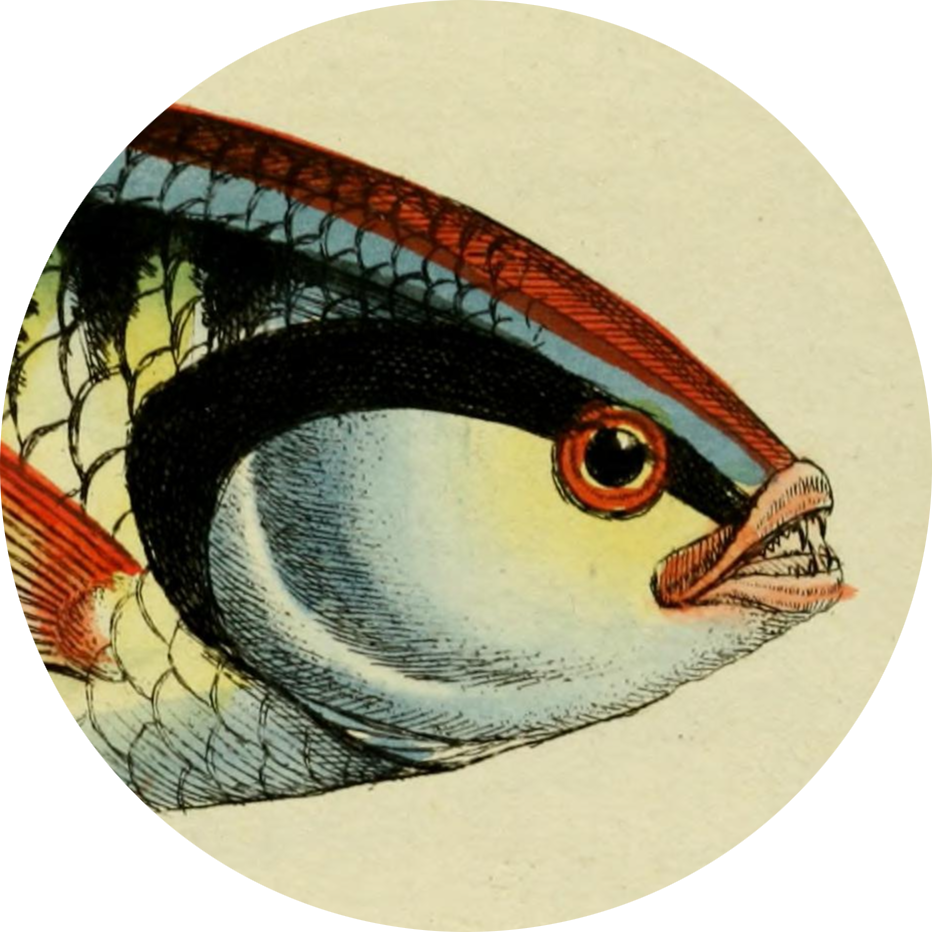

| nri | datasetName | datasetURI | nriKeyword | decimalLatitude | decimalLongitude | year | stateTerritory | ibraRegion | imcraRegion | featureID | featureName | featureFacet1 | featureFacet2 | featureFacet3 |
|---|---|---|---|---|---|---|---|---|---|---|---|---|---|---|
| ALA | SA Fauna (BDBSA) | https://collections.ala.org.au/public/show/dr365 | observed-no method stated: 884 samples | -34.92498 | 139.0421 | 2018 | South Australia | Kanmantoo | NA | https://biodiversity.org.au/afd/taxa/65625205-db74-4a87-b566-ca387b119974 | Biodiversity | Animals | Vertebrates | Birds | Biological Classification | Animals | Birds |
| ALA | SA Fauna (BDBSA) | https://collections.ala.org.au/public/show/dr365 | observed-no method stated: 24 samples | -34.89952 | 138.5954 | 2010 | South Australia | Flinders Lofty Block | NA | https://biodiversity.org.au/afd/taxa/65625205-db74-4a87-b566-ca387b119974 | Biodiversity | Animals | Vertebrates | Birds | Biological Classification | Animals | Birds |
| TERN | TERN Surveillance monitoring site NSAMDD0006 | http://linked.data.gov.au/dataset/ausplots/site-nsamdd0006 | soil profile | -33.66430 | 143.1670 | 2014 | New South Wales | Murray Darling Depression | NA | https://gcmd.earthdata.nasa.gov/kms/concept/7a16aa40-c74b-4a69-a230-1edd1b453332 | Land Surface | Soils | Soil Horizons/Profile | Land Surface | Soils | Soils |
| TERN | TERN Surveillance monitoring site QDAEIU0010 | http://linked.data.gov.au/dataset/ausplots/site-qdaeiu0010 | plant occurrence | -19.89340 | 146.1820 | 2021 | Queensland | Einasleigh Uplands | NA | https://id.biodiversity.org.au/taxon/apni/51414459 | Biodiversity | Plants | Biological Classification | Plants | Plants |
| TERN | TERN Surveillance monitoring site SAAEYB0008 | http://linked.data.gov.au/dataset/ausplots/site-saaeyb0008 | plant community | -35.04930 | 137.2140 | 2020 | South Australia | Eyre Yorke Block | NA | https://id.biodiversity.org.au/taxon/apni/51414459 | Biodiversity | Plants | Biological Classification | Plants | Plants |
| IMOS | IMOS SOOP-XBT Upper Ocean Thermal Data collected in the Tasman Sea | https://catalogue-imos.aodn.org.au:443/geonetwork/srv/api/records/55b6a183-e942-424e-b3bd-476dfb284fc0 | oceans | ocean pressure | water pressure | NA | NA | 2010 | Victoria | NA | Tweed-Moreton | https://gcmd.earthdata.nasa.gov/kms/concept/dd025312-0d27-44e0-ae05-7cfcc1aa17f0 | Oceans | Ocean Pressure | Water Pressure | Oceans | Ocean Pressure | Ocean Pressure |
EcoAssets:
Streamlining access to data from Australian environmental research infrastructures Shandiya Balasubramaniam
@ShandiyaB
Ecological Society of Australia 2023
I acknowledge the Traditional Owners of the lands on which we meet, the Larrakia people, as well as the Traditional Owners of the lands on which I live and work, the Wurundjeri people of the Kulin Nation. I pay my respects to their Elders past and present. I recognise the spiritual and cultural significance of land, water, and all that is in the environment to Traditional Owners, and their continuing connection to Country.
EcoAssets

Image from the Biodiversity Heritage Library;, contributed by Missouri Botanical Garden, Peter H. Raven Library
EcoAssets streamlines the flow of data from national research infrastructures into environmental reporting through versioned, aggregated datasets.
Monitoring
One of the challenges in compiling State of the Environment Report chapters is that studies are often place-based, meaning that compiling a truly national picture requires integrating separate studies, often conducted using different methods, and with gaps between them.
- Dr Dan Metcalfe, CSIRO and State of the Environment reports 2016 & 2021 chapter author ”
Aggregated Monitoring Data
| nri | datasetName | datasetURI | nriKeyword | decimalLatitude | decimalLongitude | year | stateTerritory | ibraRegion | imcraRegion | featureID | featureName | featureFacet1 | featureFacet2 | featureFacet3 |
|---|---|---|---|---|---|---|---|---|---|---|---|---|---|---|
Biodiversity
Aggregated Biodiversity Data
| year | basisOfRecord | stateTerritory | ibraRegion | imcraRegion | forest2018Status | forest2013Status | capadStatus | epbcStatus | griisStatus | speciesID | speciesName | occurrenceCount |
|---|---|---|---|---|---|---|---|---|---|---|---|---|
| 1900 | HUMAN_OBSERVATION | New South Wales | Australian Alps | forest | forest | PA | Not listed | Native | https://biodiversity.org.au/afd/taxa/70b2fe09-3113-4167-bb3d-6f579419b747 | Antechinus mimetes | 1 | |
| 1900 | HUMAN_OBSERVATION | Australian Capital Territory | South Eastern Highlands | non-forest | non-forest | not protected | Not listed | Native | https://biodiversity.org.au/afd/taxa/5254fe03-630b-44b2-9233-df51a7b8f25f | Pardalotus punctatus | 1 | |
| 1900 | HUMAN_OBSERVATION | South Australia | Channel Country | non-forest | non-forest | PA | Not listed | Native | https://biodiversity.org.au/afd/taxa/cbef5be9-829a-4691-9de4-125356441b1f | Calidris subminuta | 1 | |
| 1900 | HUMAN_OBSERVATION | Western Australia | Avon Wheatbelt | non-forest | non-forest | not protected | Not listed | Native | https://biodiversity.org.au/afd/taxa/031b2b69-e9fc-44c6-9df9-03c1470d5ec3 | Sericornis frontalis | 1 | |
| 1900 | HUMAN_OBSERVATION | Tasmania | Ben Lomond | forest | forest | PA | Not listed | Native | https://biodiversity.org.au/afd/taxa/ac61fd14-4950-4566-b384-304bd99ca75f | Ornithorhynchus anatinus | 1 | |
| 1900 | HUMAN_OBSERVATION | Queensland | Brigalow Belt North | non-forest | non-forest | not protected | Not listed | Native | https://biodiversity.org.au/afd/taxa/112d02bc-0878-49e1-b605-d971d27698e3 | Eudynamys orientalis | 1 | |
| 1950 | HUMAN_OBSERVATION | South Australia | North Spencer Gulf | non-forest | non-forest | PA | Not listed | Native | https://biodiversity.org.au/afd/taxa/cf17c9bb-09d1-47ce-adfe-dc060ba0b04c | Morus serrator | 1 | |
| 1950 | HUMAN_OBSERVATION | Victoria | Otway | non-forest | non-forest | PA | Not listed | Native | https://id.biodiversity.org.au/node/apni/2916905 | Atriplex billardierei | 1 |
Channel-billed Cuckoo
Scythrops novaehollandiae
 Image from the Biodiversity Heritage Library; contributed by Smithsonian Libraries
Image from the Biodiversity Heritage Library; contributed by Smithsonian Libraries
Channel-billed Cuckoo
Channel-billed Cuckoo

Channel-billed Cuckoo
Invasive and Introduced Species
Protected Areas
not shown: Heard Island and McDonald Islands Marine Reserve
Comb Wrasse
Coris picta
Image from the Biodiversity Heritage Library; contributed by Harvard University
Comb Wrasse Records in Protected Areas

Considerations
Record Types
Record Types
Record Types

Shandiya Balasubramaniam
Data Analyst, Decision Support Program Lead
Science & Decision Support, ALA
shandiya.balasubramaniam@csiro.au
@ShandiyaB
shandiya
Slides: shandiya.quarto.pub/esa2023